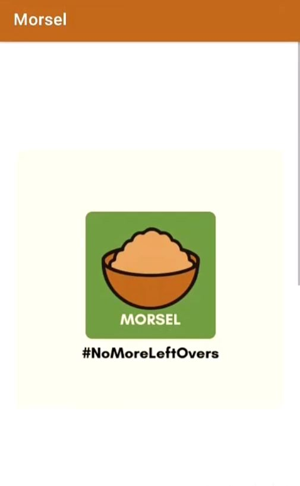
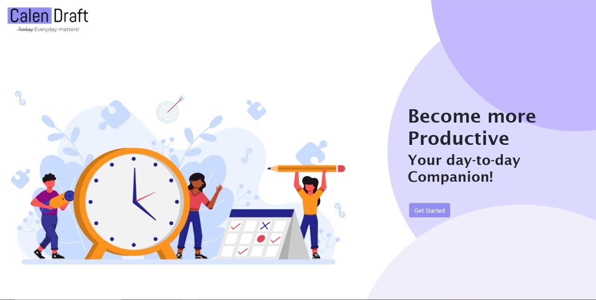

Hi There! I'm Roopa, an engineer in the making who loves learning new things! Here are some things I've worked on

Morsel
A mobile app that maps the excess food to people who are in need in real time. Donors specify the type and quantity of food they would like to donate. Each donor is mapped to a volunteer and a hotspot using a distance-based algorithm and volunteers in the area are notified about the same with the details and links. Volunteers operate for collecting these excess food packets and deliver to the places where there is a need. Volunteers also check the quality of the food before transporting it. Both donors and volunteers can track the status of a food packet from donor to recipient. Donation and Volunteer activities are incentivised with bonus points. Privileged users called moderators can add hotspots to the systems and also grant/revoke this privilege to/from other users.
Tools Used: Android (Java), Firebase

Calendraft
Design and implementation of a Faculty Calendar Management System following software engineering principles.
Tech Stack: HTML, CSS, JS, Node, MongoDB
Software Engineering Tools: Jira, Jenkins, Selenium, Sonarqube